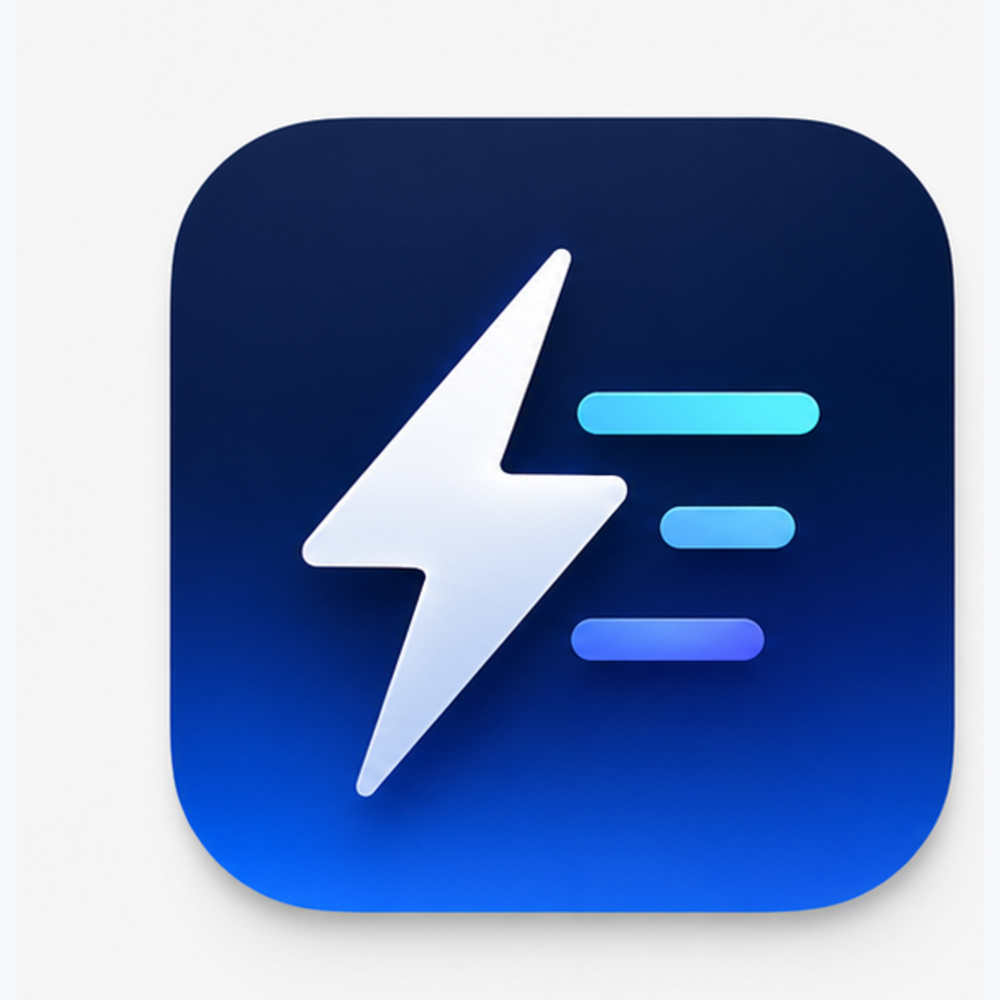
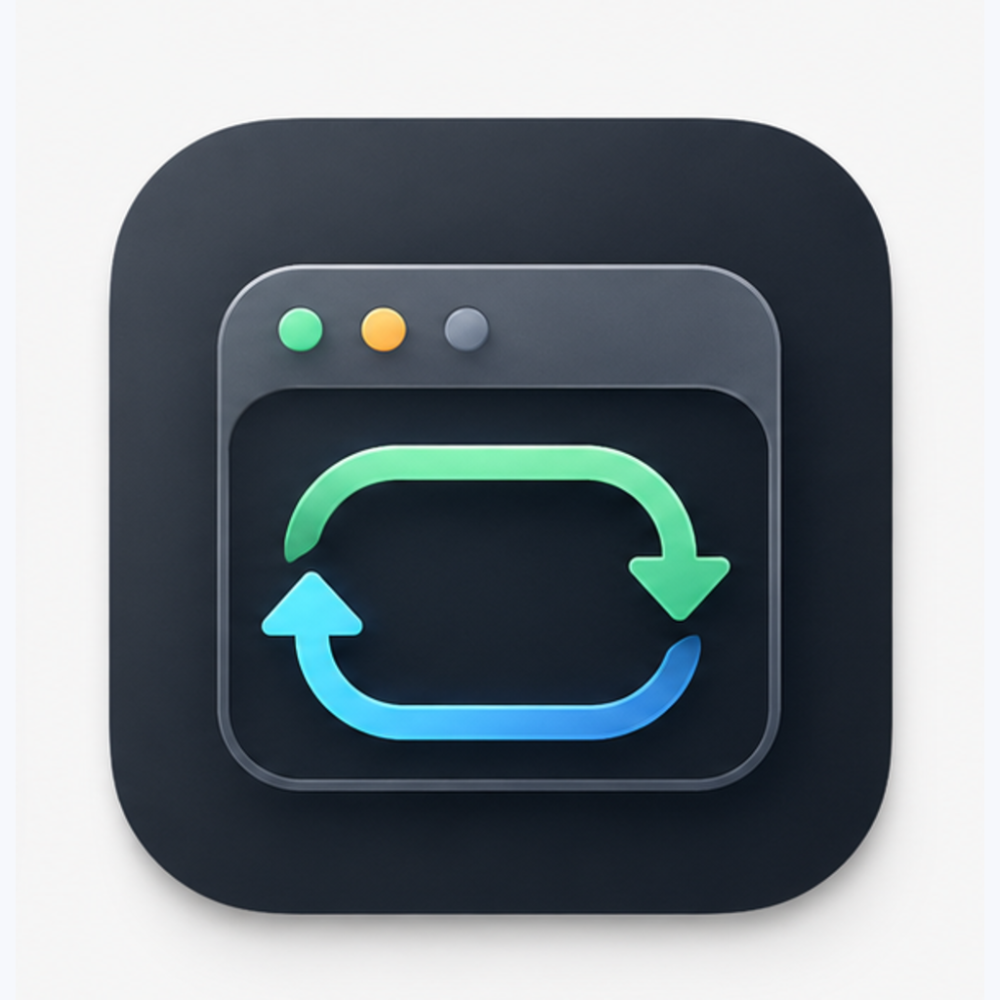
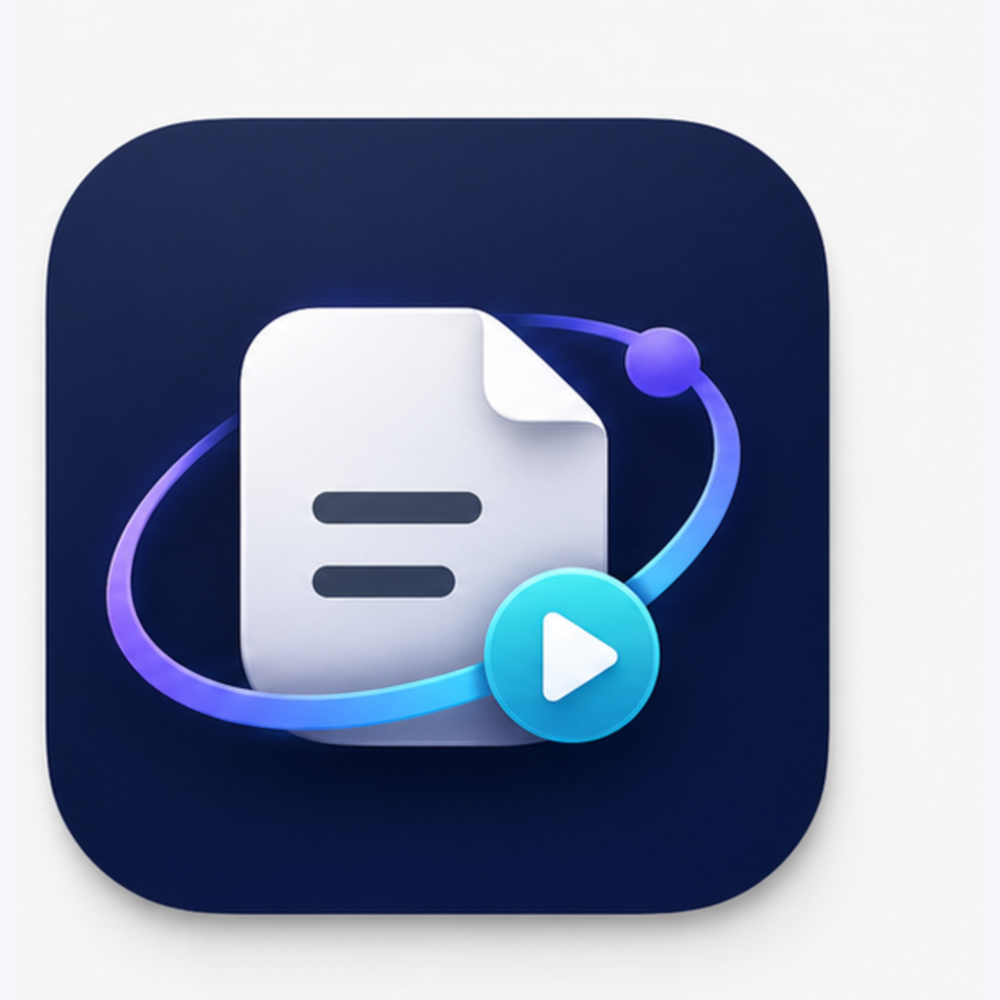

1. Bolt Script
속도 · 실행 · 스크립트
가장 단순하고 작은 크기에서 식별성이 좋습니다. 메뉴바 유틸리티/앱 아이콘에 안정적입니다.

2. Run Loop
스케줄 · 반복 · 백그라운드
자동 반복 실행의 의미가 가장 직접적입니다. 다만 32px에서는 디테일이 조금 많습니다.

3. Log Orbit
로그 · 실행 기록 · 안정감
로그 저장 기능을 가장 잘 드러냅니다. 기능 설명형 아이콘으로 확장성이 좋습니다.